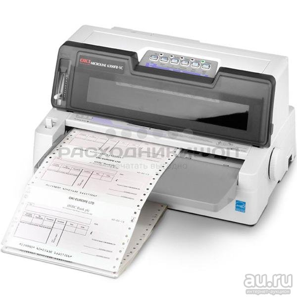

Экспорт данных из SAP Query-отчета во внутреннюю таблицу через SPOOL


Господа, м'сье абапье и прочие любители подглядывать за страданиями! Представляю вашему вниманию очередной результат танцев с бубенцами. Который в этот раз будет чуть менее бесполезным. И (быть может) сэкономит время какому-нибудь заблудившемуся SAP-кодерасту.
Иногда хочется выть от боли, когда в очередной раз появляются требования выгрузки данных из стандартных или квази-стандартных отчетов SAP. Которые зачастую вообще не предусматривают какой-либо экспорт или расширение.
Дальше будет ABAP и рассказывания о подноготной SAP ERP. Если у вас нет вуайеристских наклонностей или профессионального интереса в дальнейшем тексте, то рекомендую закрыть страницу, чтобы не испытать экзистенциальный ужас от полученной информации.
Что ж, погружаемся, товарищи. Так сказать, пристегните ремни. Будет немного трясти и пованивать.

Поехали.
Итак, представим ситуацию: Вы сидите, неспешно ковыряете код. И тут прилетает задача — достать данные из древнего отчета, нарисованного в SAP Query через Report painter; их немного обработать и отдать в другой интерфейс.
Казалось бы, что может быть сложного? Ну, например, всё.
SAP Query (далее SQ)
Это сраный SAP Query. Пользователь мышой натыкивает нужные ему поля и форму отчета, а на выходе получает готовый отчет. Софтина сама собирает ABAP-программу по конфигу. Класна? Нет.
Каждая дальнейшаая правка отчета в пользовательской морде пересобирает целиком всё. Более того, никто не гарантирует, что программа пересоберется с тем же техническим названием. Ну и при переезде правок по ландшафту дев-тест-прод -> будет генерироваться разное название.
Вывод: Вписаться в код отчета и вытащить данные перед их отображением — не получится. Юзверь перезатрёт всё прямзавтра. А скорее всего — вчера.
Report Painter
Я нарвался на "не совсем классическое" использование SQ! Данные выводятся не напрямую, а проходят через "прослойку отрисовщика" (Report Painter). И воспользоваться стандартным FM RSAQ_REMOTE_QUERY_CALL, увы, не выйдет.
Т.к. для заданного отчета вообще нет таких параметров, как "имя запроса" и "группа пользователей". Просто нечего подавать в аргументы функции.
Вывод: Увы, воспользоваться предусмотренными FM невозможно.
Это, мать вашу, не ALV
А жаль. При отображении, ALV-таблицы постят свои мета-(и не очень мета)данные в глобальный скоуп сессии пользователя. И оттуда элементарно вытащить что угодно. Например, вот так:
cl_salv_bs_runtime_info=>set( EXPORTING display = abap_false
metadata = abap_true
data = abap_true ).
" submit report and return
cl_salv_bs_runtime_info=>get_data_ref( IMPORTING r_data = ro_data ).
" do with ro_data what you want
Но выход всгда есть
(особенно, если вы живёте достаточно высоко)
Давайте подумаем, что может общего между матричными принтерами, и решением моей задачи?

Да, теми самыми принтерами с рулоном ленты. Которые буквально печатают "стуча" по бумаге, как старые печатающие машинки. И которые могут использовать только ASCII символы.
А то, что SAP (Эдакая древняя громадина) из коробки поддерживает ASCII-фикацию и печать всех отчетов, которые отрисовываются "стандартным" способом. Так это же то, что мне нужно! Такой текст будет элементарно распарсить после получения.
Достаточно дёрнуть печать отчета, и вовремя подхватить ASCII-фицированный документ кодом! Получается что-то вроде этого:
Создаём фоновое задание, где будет выполняться рендеринг и попытка печати.
CALL FUNCTION 'JOB_OPEN'
EXPORTING
jobname = kv_job_name
IMPORTING
jobcount = lv_jobcount.
Собираем параметры печати. Нам нужно попросить программу напечататься сразу же после выполнения, и не показывать никаких диалогов.
CALL FUNCTION 'GET_PRINT_PARAMETERS'
EXPORTING
list_name = 'TEST'
list_text = 'SUBMIT this fucking program TO SAP-SPOOL'
immediately = abap_true
no_dialog = abap_true
IMPORTING
out_parameters = ls_params
valid = lv_valid.
Вызываем программу в фоне со всеми собранными параметрами. Конструкция to sap-spool ... without spool нисколько сап не смущает. И вполне корректно отрабатывает.
SUBMIT program_technical_name USING SELECTION-SET 'VAR1'
TO SAP-SPOOL SPOOL PARAMETERS ls_params
WITHOUT SPOOL DYNPRO
VIA JOB kv_job_name NUMBER lv_jobcount
AND RETURN.
Так, программу мы вызвали, теперь придется костылём дожидаться завершения фоновой задачи. Никаких ивентов и коллбэков тут нет.
" Костыль ожидания завершения асинхронной жобы
WHILE ls_empty IS INITIAL.
WAIT UP TO 5 SECONDS.
SELECT SINGLE * FROM tbtco INTO ls_empty WHERE jobname = kv_job_name AND jobcount = lv_jobcount AND status = 'F'.
ENDWHILE.
Ну, собственно, всё. Фоновая задача завершена. В системе уже хранятся отрендеренные данные, и нам остаётся лишь их подхватить.
SELECT SINGLE listident
FROM tbtcp
INTO lv_listident
WHERE jobname = kv_job_name
AND jobcount = lv_jobcount.
CHECK lv_listident IS NOT INITIAL.
lv_rqident = lv_listident.
CALL FUNCTION 'RSPO_RETURN_ABAP_SPOOLJOB'
EXPORTING
rqident = lv_rqident
TABLES
buffer = lt_buffer.
В результате получаем внутрённюю таблицу lt_buffer из строк отчета. Её элементарно разбирать на куски, и вытаскивать нужные нам значения.
Столбцы в такой таблице разделены символом вертикальной черты '|' и ничего не стоит распарсить поля по отдельности.
Полный код на github gists: